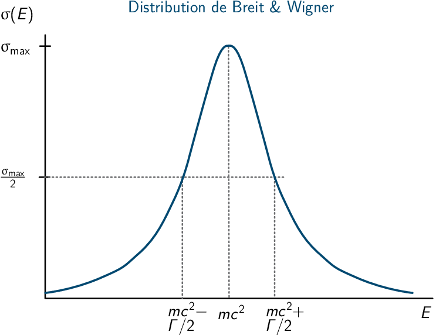

TD3 : Réactions de production et de désintégration de particules

Figure 1: Modèle standard de la physique des particules
1 Production et désintégration de particules
- Les particules élémentaires sont les quarks et les leptons (du grec leptos
= léger) dont le spin demi-entier font de ces particules des fermions. À la
différence des leptons, les quarks n'apparaissent pas à l'état libre et sont
confinés dans les hadrons. On distingue deux familles de hadrons :
- les baryons
- (du grec baryos = lourd) constitués de 3 quarks \(q_1q_2q_3\), de nombre baryonique égal à 1 et de spin 1/2 entier. Exemple : nucléons
- les mésons
- (du grec mesos = milieu) constitués d'une paire de quark –
antiquark, de nombre baryonique nul et de spin
entier. Exemple : pions
Les quarks sont sensibles à toutes les interactions tandis que les leptons chargés – \(e\), μ, τ – sont sensibles à l'interaction EM et faible. Les leptons neutres i.e. les neutrinos n'intéragissent que par interaction faible.
- Toutes les interactions conservent la charge électrique, le nombre
baryonique, le nombre leptonique et le moment cinétique total.
a) \(K^- + p\rightarrow \bar{K}^0 + n\)
b) \(\pi^+ + p\rightarrow \Sigma^+ + K^+\)
c) \(\pi^- + p\rightarrow \Sigma^0 + K^+ + \pi^-\)
d) \(\pi^- + p\rightarrow \Sigma^+ + K^-\) non conservation de l'étrangeté → interaction faible
e) \(\bar{K}^0 + p\rightarrow K^- + p + \pi^+\)
f) \(\bar{p} + p\rightarrow \pi^+ + \pi^+ + \pi^- + \pi^- + \pi^+\) ne conserve pas la charge électrique
g) \(\mu^+ \rightarrow e^+ + \nu_e + \bar{\nu}_\mu\) leptons neutres → interaction faible
h) \(K^+ + p \rightarrow \Sigma^+ + n + \pi^-\) ne conserve pas la charge électrique ni le nombre baryonique
- \(\mu^+\rightarrow e^+ + \nu_e + \bar{\nu}_\mu\)

Figure 2: Diagramme de Feynman de la désintégration de l'anti-muon
2 Résonances
Formule de Gell-Mann & Nishijima \(Q/e = T_3 + Y/2\) avec \(Y = B\) + saveur = hypercharge. Dans cet exercice, \(c=b=t=0\) donc \(Y = B\) + étrangeté \(S\)
- \(Y(\Sigma^+) = 2\cdot\left(\frac{Q}{e} - T_3\right) = 0\) d'où \(S(\Sigma^+) =
-B(\Sigma^+) = -1\)
\(Y(K^+) = 2\cdot\left(\frac{Q}{e} - T_3\right) = 1\) d'où \(S(\Sigma^+) = +1\)
- Détermination du type d'interaction \(\pi^+ + p\rightarrow K^+ + \Sigma^+\)
\(\pi^+\) + p → \(K^+\) + \(\Sigma^+\) \(B\) 0 + 1 = 0 + 1 \(\unicode{x2713}\) \(Q/e\) 1 + 1 = 1 + 1 \(\unicode{x2713}\) \(T_3\) 1 + 1/2 = 1/2 + 1 \(\unicode{x2713}\) \(\vv{T}\) \(\vv{1}\) + \(\vv{1/2}\) = \(\vv{1/2}\) + \(\vv{1}\) \(\unicode{x2713}\) \(S\) 0 + 0 = 1 + -1 \(\unicode{x2713}\) Conservation de la parité et du moment cinétique total :
\begin{align*} \vv{I}_\pi + \vv{I}_p + \vv{L}_i &= \vv{I}_K + \vv{I}_\Sigma + \vv{L}_f\\ \vv{0} + \vv{1}/2 + \vv{L}_i &= \vv{0} +\vv{1}/2 + \vv{L}_f\\ \pi(\pi^+)\times\pi(p)\times(-1)^{L_i} &= \pi(K^+)\times\pi(\Sigma^+)\times(-1)^{L_f}\\ (-1)\times(+1)\times(-1)^{L_i}&=(-1)\times(+1)\times(-1)^{L_f} \end{align*}Si \(L_i=L_f\) toutes les quantités sont conservées donc interaction forte. Le temps caractéristique de la réaction est donc de l'ordre de 10-23 à 10-20 secondes.
- Calcul de l'énergie seuil des pions : \begin{align*} T_S &= \frac{|Q|\cdot\Upsigma m_\text{initiale,finale}c^2}{2\cdot m_pc^2}\\ &=\frac{604\cdot(140+940+494+1190)}{2\cdot940}\\ &=\unit[888]{MeV} \end{align*}
- \(\pi^+ + p \rightarrow R \rightarrow K^+ + \Sigma^+\)
Calcul de l'invariant relativiste \(I\)
\[I=(E_\pi + E_p)^2 - (\vv{p}_\pi + \vv{p}_p)^2c^2 = (m_Rc^2)^2\] or \(\vv{p}_p = \vv{0}\) et \(E_\pi = \sqrt{p_\pi^2c^2 + m_\pi^2c^4}\), \(E_p=m_pc^2\) d'où
\[m_R^2c^4 = \left(\sqrt{1500^2 + 140^2} + 940\right)^2 - 1500^2 = \unit[3.7\,10^6]{MeV}^2\]
\[m_Rc^2 = \unit[1933]{MeV}\]
- Largeur Γ = 240 MeV

\[\tau =\frac{\hbar}{\Gamma} = \frac{\hbar c}{\Gamma c} = \frac{\unit[197.3]{MeV.fm}}{\unit[240]{MeV}\cdot\unit[3\,10^{23}]{fm/s}} = \unit[2.7\,10^{-24}]{s}\]
→ désintégration par interaction forte
- \(\vv{L}_i = \vv{3}\)
La réaction \(\pi^+ + p \rightarrow K^+ + \Sigma^+\) se fait par interaction forte de même que \(R\rightarrow K^+ + \Sigma^+\). La réaction de production de \(\pi^++p\rightarrow R\) se fait donc également par interaction forte → conservation de la parité et du moment cinétique total.
\[\vv{I}_\pi + \vv{I}_p + \vv{L}_i = \vv{I}_R\] \[\pi(\pi^+)\times\pi(p)\times(-1)^{L_i} = \pi(R)\] d'où \(I_R^\pi = 5/2^+\) ou \(7/2^+\)
- Conservation de \(\vv{T}\) et \(T_3\) dans la désintégration de \(R\rightarrow
K^++\Sigma^+\)
\[T_3(R) = T_3(K^+) + T_3(\Sigma^+) = 3/2\] \[\vv{T}(R) = \vv{T}(K^+) + \vv{T}(\Sigma^+) = \vv{1/2} + \vv{1} = \vv{1/2},\vv{3/2}\] or comme \(T_3(R) = 3/2 \Leftrightarrow \vv{T}(R) = \vv{3/2}\)
- La conservation du nombre baryonique, de la charge électrique et de l'étrangeté font que \(R\) est un baryon de charge \(Q/e=+2\) et d'étrangeté nulle. En se reférant au tableau page 30, on note que cette résonance présente les mêmes propriétés que la baryon \(\Delta^{++}\) à ceci près que sa masse 1933 MeV et sa durée de vie sont respectivement plus élevée et plus courte1. La résonance \(\bm{R}\) est donc un état excité de \(\bm{\Delta^{++}}\).
- \(\pi^- + p \rightarrow K^+ + \Sigma^-\)
\(Q/e\), \(B\), \(I^\pi\) sont conservés.
1le moment cinétique total est également différent 5/2+ ou 7/2+ contre 3/2+
\(\pi^-\) + p → \(K^+\) + \(\Sigma^-\) \(T_3\) -1 + 1/2 = 1/2 + -1 \(\unicode{x2713}\) \(\vv{T}\) \(\vv{1}\) + \(\vv{1/2}\) = \(\vv{1/2}\) + \(\vv{1}\) \(\unicode{x2713}\) \(s\) 0 + 0 = 1 + -1 \(\unicode{x2713}\)
Remarques : les baryons \(\Delta^{++}\) et \(\Delta^-\) sont respectivement constitués de 3 quarks \(u\) et 3 quarks \(d\). Or le moment cinétique total de ces particules 3/2 impliquent que le spin des 3 quarks soient alignés "vers le haut". Le principe de Pauli exclut une telle configuration pour des fermions. En ajoutant le nombre quantique de couleur, la chromodynamique quantique permet un tel état tout comme pour le baryon Ω- postulé par Gell-Mann et découvert à Brookhaven en 1964.